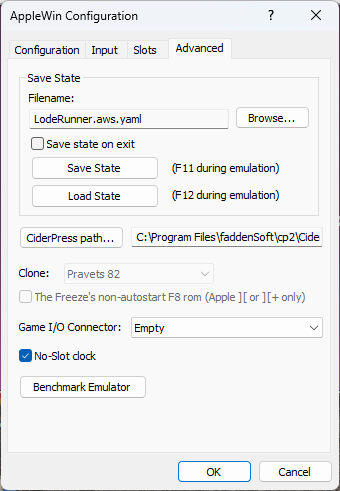

Advanced Settings

Save State Filename:
This is the file name to use for save-state files. The default
directory is the same as where your AppleWin.exe program is stored.
Save State on Exit:
Checking this box will automatically save the current state of the
emulator upon exit. The state will be saved to the file
specified above (SaveState.yaml by default).
Save State:
Press this button to save the current state of the emulator to the file
specified. You can also save the system state during
emulation by pressing the F11 key.
Load State:
Press this button to load the specified state file into
the emulator. You can also load the system state during
emulation by pressing the F12 key.
CiderPress path:
Use this to specify where CiderPress is installed.
The right mouse button context menu on either of the drive icons allows you to open CiderPress with the image in the drive.
Clone:
If you have specified Computer as 'Clone' on the main Configuration
page, then this drop-down menu can be used to specify the clone type.
NB. Pravets 82, 8M and 8A are Bulgarian Apple II clones;
TK3000 is a Brazilian //e clone;
Base 64A is a Taiwanese Apple II clone.
- Pravets 8A: Use F10 for the Pravets Caps Lock (and the PC's Caps Lock key controls Cyrillic/Latin lock).
- TK3000: Use Scroll Lock for the 'mode' key. Use to switch between standard Apple II and accented characters.
- Base 64A: Use Delete for the 'F2' key (eg. press F2, release F2 then press a key to auto-type a BASIC keyword).
The Freeze's non-autostart F8 rom:
If you have specified Computer as 'Apple ][' or 'Apple ][+' on the main
Configuration page, then you will be able to enable this setting.
The Freeze F8 rom is a hacker's rom that replaces the normal 2K rom at
$F800. Here's the
original release note
Game I/O Connector:
From the drop-down menu, select a device to use in the internal Game I/O Connector.
Supported devices are:
- Empty
- Southwestern Data Systems' datakey - SpeedStar (copy protection dongle)
- Dynatech Microsoftware / Cortechs Corp's protection key - CodeWriter (copy protection dongle)
- Robocom Ltd's interface module - Robo 500/1000/1500 & RoboCAD 1/2 (copy protection dongle)
- Hayden Book Company, Inc's protection key - Applesoft Compiler (copy protection dongle)
NB. Copy protection dongles can interfere with joysticks (eg. buttons may be hardwired to a fixed state), so only use dongles with the intended software.
NB. Copy protection dongles can interfere with RGB cards (eg. unexpected video modes may get selected).
NB. For Apple II/II+ models, when a joystick is selected (from the Input tab), then there is also an implicit joystick connected at the same time as the device selected here (and some dongles even allowed 16-pin game connectors to be plugged in on top, eg. SDS and Robocom devices).
Benchmark Emulator:
This will run a benchmark test that will show how fast your PC can emulate an
Apple //e system with this emulator. In order to run the benchmark, the
emulated machine must be reset and you will lose any unsaved work. You will be
prompted before you continue this action. The results given are:
- Pure Video FPS
- Pure CPU MHz (video update)
- Pure CPU MHz (full-speed)
- Expected average video game performance (in FPS)
Use Ctrl+C to copy the results to the clipboard.